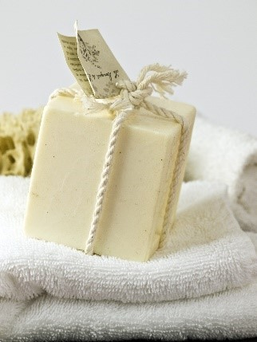
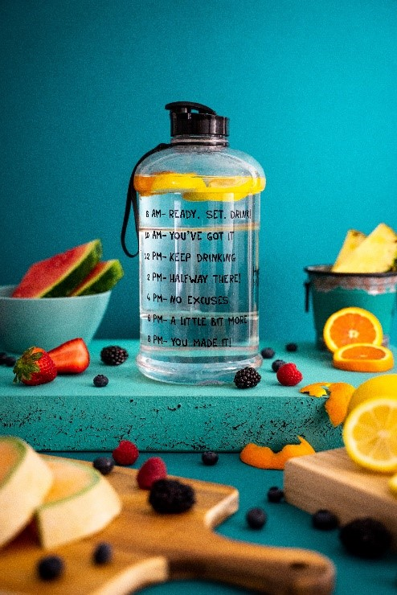

Journée mondiale des fleuves
Bienvenue à la première journée mondiale des fleuves. Pour interragir avec la carte, cliquer sur les stands (carrés noirs). Merci
Expériences et pédagogie sur la pollution plastique
Vous le savez tous, la pollution plastique est l'un des grand enjeux de notre époque : nos plages et nos océans en sont remplis. Ce que vous ne savez peut-être pas, c'est qu'une grande partie de ces plastiques sont sous la forme de microplastiques : des particules si fines qu'elles sont presque invisibles. Et on en trouve partout : l'eau des océans, mais aussi dans l'eau des fleuves. Venez comprendre la pollution plastique, et pourquoi nous devons réduire drastiquement notre consommation de plastique
Sur le Stand
Plusieurs expériences montrant l'impact du plastique, et ainsi que des discussion avec des professionnels
Idée d'expérience :
Présenter 4 aquarium côte à côté, et montrer les différent stade de la décomposition du plastique en microplastique
Venez vivre une expérience à 360° grâce au stand VR
Sur ce Stand, nous vous proposons de découvrir la beauté des océans de l'intérieur. Grâce à la technologie de réalité virtuelle, plongée au cœur des océans. Emerveillement garanti !
L'application WAG : des solutions au quotidien
Besoin d'un coup de pouce pour protéger les fleuves au quotidien?
L'application WAG vous permet de retrouver tous nos conseils pour rendre les fleuves plus propres. Vous pourrez aussi retrouver la communauté IAGF et partager ensemble vos progrès.
Tables rondes

Lors de cette journée, nous vous proposons aussi des discussions avec des professionnels, afin d'aborder les thématiques suivantes :
- Pollution plastique dans le fleuve
- L'Histoire du Rhône et de la Saône
- Réhabilitation des lônes, les "bras" du Rhône
- La gestion durable des fleuves
- Les aménagements du Rhône
- Les dangers de la surpêche
L'art et le plastique
Dans le monde, de nombreux artistes utilisent le plastique pour créer des œuvres et ainsi sensibiliser la population. Le résultat est bluffant. Sur le stand : Vous découvrirez une exposition photo des œuvres d'une dizaine d'artistes. En voici trois d'entre eux :
Mady Barker
Mandy Barker photographie les déchets trouvés dans les mers et les océans. Elle participe aux collectes de déchets avec des scientifiques ou encore des associations comme Greenpeace. Son travail consiste ensuite à photographier tous ces morceaux de plastique et créer des galaxies de déchets en utilisant des logiciels comme photoshop.
Elle explique : « Le but de mon travail est d’engager et de stimuler une réponse émotionnelle pour le spectateur, en combinant une contradiction entre l’attraction esthétique initiale et le message de conscience. Le processus de recherche est une partie vitale du développement de mes images, elles sont basées sur des faits scientifiques qui sont essentiels pour l’intégrité de mon travail. »
Angela Haseltine Pozzi
Angela Haseltine Pozzi transforme les déchets qui s’échouent sur les plages de l’Oregon en œuvre d’art. Elle réalise ces œuvres avec une équipe de bénévoles qui l’aide à ramasser les déchets, à les nettoyer, à les trier par couleur puis à les assembler. Elle a ainsi créé une communauté appelée « Washed Ashore Project » fondée en 2010.
Depuis la fondation de cet organisme à but non lucratif, plus de 10 000 bénévoles ont nettoyé plus de 300 miles (482 kilomètres) en récupérant 38 000 livres de déchets sur les côtes. Ces matières ont été transformées en plus de 60 œuvres monumentales. Certaines sont exposées dans des jardins et musées aux Etats-Unis.
Pour dénoncer la pollution des océans par les plastiques, le photographe Canadien Benjamin Von Wong a eu l'idée de récupérer des bouteilles en plastique et d’en faire des décors mettant en scène des sirènes.
Statue de plastique
Chaque jour, nous consommons du plastique, mais savez-vous ce que représente cette quantité en terme de volume sur un an ? Venez le découvrir en nous rejoignant le jour J. Les plastiques utilisés seront récupérés lors d'une ou plusieurs collectes réalisées dans les rues lyonnaises.
Sur le stand : Vous vous retrouverez en face d'une montagne de plastique géante qui vous donnera une idée de la consommation annuelle de plastique d'une famille de 4 personnes. Etant donné qu'un Français consomme en moyenne 68 kilos de plastique, cette montagne fera donc 272 kilos.
Tunnel émotion
Nous vous proposons une immersion sensorielle dans le tunnel émotion. Ce tunnel se déroulera sur plusieurs dizaines de mettre, dans un tunnel clos dans lequel va être projeté des images des fonds marin, ainsi qu'une ambiance sonore d'animaux marins. Le but est de recréer une atmosphère sous-marine. A l'aide de projecteurs et de son ambiance sonore, ce tunnel va vous immerger au cœur des océans

.png)
Retransmission digitale de la journée
Afin de rendre cet évènement international, nous allons digitaliser l'évènement. Durant toute la journée, un présentateur et un caméraman vont naviguer entre les différents stands et présentation, et vont retransmettre en direct l'évènement, afin de le partager à tous. La journée sera retransmise en live sur internet, sur YouTube et Twitch, avec des sous-titres en anglais en direct.

Se sensibiliser ensemble à la consommation en vrac
Parce que les déchets domestiques ont de fortes possibilités de finir dans le fleuve, il est urgent de vous donner les clés pour passer à l’achat de denrées alimentaires en vrac. Ce stand sera proposé en partenariat avec un commerce de vrac lyonnais afin de reconstituer un rayon de magasin en vrac et de comparer la quantité de déchets évités lorsque les achats sont effectués en vrac. Le gain pour vous ? Des balades sur des quais propres, au bord de fleuves purifiés et d’une biodiversité sauvegardée.
S’encourager à consommer des produits locaux
Vous souhaitez consommer local mais vous ne savez pas où trouver des producteurs près de chez vous ? La ville de Lyon a pensé vous a concocté une carte :
Lien vers la carteEn consommant local, vous préservez votre patrimoine et donc vos emplois. De plus, ce mode de consommation vous permet de vous alimenter de produits de saisons, plus savoureux et évitant l’assèchement des fleuves.
Cette carte recense :
- Les marchés alimentaires qui ont été maintenus par dérogation pendant le confinement et le début du déconfinement
- Les épiceries locavores/vrac qui ont maintenu l’ouverture de leur commerce
- Les producteurs locaux qui se sont adaptés et ont proposé un service de commandes en ligne avec points relais et/ou vente directe, livraison etc…
Ce stand vous mettra à disposition la carte ainsi que la possibilité de découvrir tous les avantages de la consommation locale !
Passons à la toilette zéro déchet avec des produits ménagers naturels !
Si vous aimez prendre soin de vous en protégeant la nature, les savons, shampoings et crèmes solides sont faits pour vous !
Et si vous vous demandez en quoi utiliser des savons solides permet de préserver votre santé : moins de déchets dans la nature, moins de déchets dans vos estomacs !
Cet atelier sera l’occasion pour vous de découvrir les meilleures recettes et marques de produits de toilette et ménagers solides et naturels.
Mieux comprendre le textile durable
Le textile, ce n’est pas une mince affaire ! De nombreux procédés chimiques polluent l’environnement aquatique et nuit à la santé de certaines populations telles que les indous qui se baignent dans les eaux du Gange lors de fêtes religieuses. Aussi, les microfibres font partis des polluants à risques qui peuvent se retrouver dans nos assiettes. Mais en fait, comment consomme-t-on durable lorsqu’on parle de textile ? Un stand en partenariat avec Clear Fashion, une application pour choisir et privilégier les marques et vêtements éco-responsables, sera animé afin de mieux comprendre diverses problématiques : les matières à privilégier, les labels textiles durables tels qu’Oeko-tex ou GOAT, les nouvelles marques françaises privilégiant l’économie circulaire (1083, Hoopal, Ubac…), les moyens de fournir en seconde main, etc… Vous repartirez pleins de solutions en main pour protéger les fleuves et votre santé !
Voyager responsable
Parce qu’il ne s’agit pas uniquement de protéger les fleuves et sa propre santé, mais aussi de (re)découvrir la beauté de ce monde, l’association TheGreenRoad animera un stand sur le thème du voyage responsable pour mieux s’émerveiller de la biodiversité qui nous entoure !
Découvrir OnTheGreenRoad :
La situation complexe que l’on connaît actuellement (réchauffement climatique, injustices sociales, frustrations…) est le point de départ du voyage de Siméon et d’Alexandre.
Les deux cousins à l’origine du projet On The Green Road ont parcouru 18 000 km, traversé 26 pays, rencontré les paysans locaux caméras en main pour montrer les solutions locales à ces problèmes globaux. Aujourd’hui c’est toute une association qui s’est développée autour de ce documentaire afin de partager cette belle aventure et participer à une prise de conscience plus que nécessaire.
Les ustensiles pratiques et réutilisables
Le fleuve dans la gourde ou dans le verre à usage unique ? A vous décider ! Ce stand vous proposera foule de solutions pour vous fournir en objets pratiques réutilisables au quotidien.
Association Lyonnaises
Anciela
Agir pour le climat, s’entraider face aux difficultés, réduire nos déchets, protéger la biodiversité, être à côté des personnes âgées et fragiles, favoriser une économie sociale et solidaire… De nombreuses initiatives existent pour construire une société écologique, solidaire et démocratique ! Afin de les faire découvrir à tous les Lyonnais, l’association Anciela a rencontré les associations, initiatives et les personnes qui s’engagent et les a rassemblés dans ce guide. Pour que chacun puisse s’engager et agir pour les causes qui comptent pour lui, là où il se sentira bien et utile ! Un stand Anciela proposera de se procurer ce guide lors de l’évènement.
The Greener good
The Greener good est un tout nouveau guide destiné aux habitants de la métropole de Lyon. Il recense plus de 460 adresses, marques et structure locales engagées dans une démarche écoresponsable. Ses 228 pages recouvrent tous les domaines de la vie quotidienne : alimentation durable, vêtements et accessoires écoresponsables, hygiène et bien-être, maison et habitat écologiques, vie pratique, parents et enfants. Fort de nombreuses pages d’explications des enjeux et de conseils pratiques, il deviendra un bel outil pour ceux pour ceux et celles qui souhaitent repenser leurs habitudes de consommation ! Un stand The Greener Good proposera de se procurer ce guide lors de l’évènement.
Mur de solutions
Maintenant que vous avez (re)découverts les liens des fleuves avec les Hommes et les problèmatiques engendrées, nous vous proposons d'agir en conséquence pour sa protection. C'est très simple : le mur d'actions présente moins de 15 solutions ultra-concrètes et efficaces pour vivre plus durablement au quotidien. Vous aurez la possibilité de choisir une solution présente sur les grandes pancartes du mur de solutions et de vous faire photographier avec cette dernière. La photo sera immédiatement développée et vous pourrez la conserver, comme un rappel d'un défi tout simple à effectuer ce mois-ci pour améliorer votre bien-être et protéger les fleuves. Enfin, vous pourrez défier vos amis sur l'application WAG pour une aventure plus entrainante!
Dans le cadre de notre cursus à l’emlyon business school, nous avons travaillé sur un Projet Innovation adressé par la CNR (Compagnie Nationale du Rhône). Nous avons ainsi dû imaginer un concept novateur pour la première journée mondiale des fleuves. Vous trouverez sur cette page notre prototype, qui vous permet d’avoir un aperçu des différents stands que vous pourriez être amenés à découvrir le jour J.